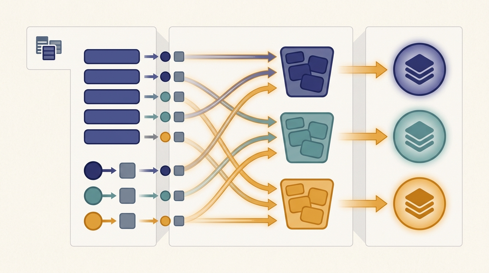

"I spent the whole job sitting on a key, waiting for my values to arrive from across the cluster. The map workers were done in seconds. I waited for the network all afternoon."
A Reducer That Has Seen the Shuffle

MapReduce asks you to write only two pure functions, a map and a reduce, and hands the entire distributed system to the framework: it partitions the input, runs the maps in parallel, moves data across the network to group it by key, runs the reduces, and re-executes anything that fails. The single hardest and most expensive part of that machinery is the middle step, the shuffle, where every value is routed to the worker responsible for its key. Map and reduce are cheap, local, embarrassingly parallel computation; the shuffle is communication, and communication is what costs money and time at scale. This section dissects all three phases, shows why the shuffle dominates, and introduces the combiner, a tiny piece of map-side aggregation that can shrink the shuffle by orders of magnitude. The lesson that the shuffle is the bottleneck is the one that carries forward: the same group-and-move-by-key operation returns, transformed, as the all-reduce of distributed training.
Section 6.1 motivated MapReduce as the answer to a recurring problem: a computation whose input is too large for one machine but whose structure is "do the same independent thing to every record, then combine." This section opens that structure up. A MapReduce job is three phases that always run in the same order. The map phase applies a function to each input record and emits intermediate key-value pairs. The shuffle phase, supplied entirely by the framework, groups every emitted value by its key and moves it across the network to the worker that will reduce that key. The reduce phase applies a function to all the values for a single key and emits the final output. The programmer writes the map and the reduce; the framework owns the shuffle, the parallelism, the partitioning, and the fault tolerance. Holding that division of labor in mind is the whole game, so we draw it before we dissect it.
1. Map: One Function, Every Record, In Parallel Beginner
The map phase is the easy half of MapReduce, and its ease is the whole point. The framework slices the input into fixed-size pieces called input splits, typically the blocks of a distributed filesystem, and assigns one map task per split. Each map task reads its split record by record and calls your map function on each record. The map function returns zero or more intermediate key-value pairs. Counting words, the map receives a line and emits one $(\text{word}, 1)$ pair per word; building an inverted index, it receives a document and emits one $(\text{term}, \text{docID})$ pair per term. The crucial property is that map tasks are completely independent: no map task reads another's input, sees another's output, or waits on another. This is the embarrassingly parallel structure from Section 6.1, and it means the map phase scales linearly with the number of workers up to the number of splits.
Because the work is per record and stateless across records, the framework is free to place each map task on the machine that already holds its split, so the input never crosses the network. That choice is not an accident; it is the data-locality principle from Section 2.8, applied at the granularity of a filesystem block. Moving computation to data is cheap; moving data to computation is the thing we are trying to avoid. The map phase honors that rule perfectly, which is precisely why all the unavoidable data movement gets pushed into the next phase.
You supply a map and a reduce, each a pure function of its input with no knowledge of machines, networks, or other tasks. Everything that makes the job distributed, splitting the input, scheduling tasks near their data, partitioning intermediate keys, transporting values across the network, sorting and grouping them, retrying failures, lives inside the framework and is identical from one job to the next. This separation is why MapReduce spread: a person who can write a loop over records can run that loop over a petabyte on a thousand machines without writing a line of distributed code. The price of that gift is that the one operation you cannot see or write, the shuffle, is also the one that dominates the cost.
2. Shuffle: The Phase That Costs Intermediate
Between map and reduce sits the shuffle, the only phase the programmer never writes and the only phase that is communication rather than computation. Its job is a global group-by: every intermediate pair emitted by every map task must be delivered to the single reduce task responsible for its key. The framework decides which reducer owns which key with a partition function, almost always $\text{partition}(k) = \operatorname{hash}(k) \bmod R$ for $R$ reduce tasks, so that the same key from every map task lands on the same reducer. Each map task therefore writes its output into $R$ buckets, sorted by key; each reduce task then pulls its bucket from all $M$ map tasks, producing $M \times R$ transfers across the network.
This all-to-all movement is why the shuffle dominates. The map phase touched data already local to each worker; the reduce phase will touch data already gathered on each reducer; but the shuffle, sitting between them, must physically relocate essentially the entire intermediate dataset across the cluster fabric. Its cost scales with the volume of intermediate data, not the cleverness of your map function, and it is bounded by network bandwidth, not by how fast the CPUs compute. If we let $V$ be the total bytes emitted by the maps and $B$ the effective bisection bandwidth of the cluster, the shuffle cannot finish faster than roughly $V / B$, no matter how many cores you add. Adding map and reduce workers speeds the cheap phases and leaves this floor untouched, which is the MapReduce face of the communication-versus-computation tension that Chapter 3 models with the alpha-beta cost law.
Look closely at what the shuffle does: it takes a value held on every worker, routes the values that share a key to one place, and combines them there. Replace "key" with "gradient coordinate" and "combine" with "sum," and you have described the all-reduce that synchronizes data-parallel training. The MapReduce shuffle of this chapter is the same group-and-combine-by-key operation that returns, optimized into a ring or tree collective, as the gradient all-reduce of Chapter 15, built on the communication primitives of Chapter 4. The reason both phases dominate their respective systems is identical: they are the step where data must cross the network. When you learn later that the all-reduce is the bottleneck of distributed training, remember that you already met that bottleneck here, under the name shuffle.
3. Reduce: Combine All Values for a Key Beginner
Once the shuffle has gathered every value for a key onto its reducer, the reduce phase is again cheap and local. Each reduce task iterates over its assigned keys; for each key it receives the key and an iterator over all the values that were emitted for it anywhere in the cluster, and it calls your reduce function to fold those values into a final result. Word count sums the ones to a total; an inverted index concatenates the document IDs into a posting list; an average sums the values and divides by the count. Like the map, the reduce is a pure function with no awareness that its inputs traveled across the network to reach it, and reduce tasks are independent of one another, so the reduce phase parallelizes across the $R$ reducers exactly as the map parallelized across the $M$ mappers.
There is a subtlety worth stating plainly, because it sets up the combiner. The reduce function for many useful jobs is associative and commutative: the order in which you fold the values does not change the answer, and you may fold subsets first and combine the subtotals later. Summation, counting, maximum, minimum, and set union all have this property; computing a median or an exact distinct count does not. When the reduce is associative and commutative, the framework is free to do part of the reducing early, before the shuffle, while the data is still local to each map task. That early, map-side reduction is the combiner, and it is the cheapest large win in all of MapReduce.
4. Combiners: Pre-Aggregate to Shrink the Shuffle Intermediate
A combiner is a reduce that runs on the map side, on one map task's output, before anything is shuffled. If a map task counting words emits $(\texttt{the}, 1)$ ten thousand times within its split, shuffling ten thousand identical pairs to a reducer that will only add them up is pure waste. A combiner collapses those ten thousand pairs into a single $(\texttt{the}, 10000)$ pair locally, and only that one pair crosses the network. Because the reduce is associative and commutative, the reducer reaches the identical final answer whether it sums ten thousand ones or one ten-thousand: the combiner changes the shuffle volume, never the result. In the language of Chapter 4, the combiner is a local reduction performed before the collective, the same trick that reduce-scatter uses to avoid moving redundant data.
The demonstration below builds all four stages, map, combine, shuffle, and reduce, as separate Python functions over a synthetic log dataset, and measures the shuffle in bytes with the combiner off and on. The reduce computes per-status total bytes and request counts, an associative-commutative aggregation, so the combiner is safe. We assert that the final result is byte-for-byte identical in both runs and report how much the combiner shrank the data that would cross the network.
import random
from collections import defaultdict
# ---- A small dataset: simulated server log lines "<status> <bytes>" ----
random.seed(7)
statuses = ["200", "200", "200", "404", "500", "301"] # skewed toward 200
records = [f"{random.choice(statuses)} {random.randint(50, 5000)}"
for _ in range(20_000)]
K = 4
splits = [records[i::K] for i in range(K)] # 4 input splits, one per map task
def emit_size(value):
"""Cost model for one shuffled key-value pair, in bytes (key + 8-byte int)."""
return len(value[0]) + 8
# ---- MAP: each split -> list of (status, bytes) pairs, fully independent ----
def map_phase(split):
out = []
for line in split:
status, nbytes = line.split()
out.append((status, int(nbytes))) # emit key-value pair
return out
mapped = [map_phase(s) for s in splits] # runs in parallel, per split
# ---- COMBINE: map-side pre-aggregation (sum + count) per split ----
def combine_phase(pairs):
agg = defaultdict(lambda: [0, 0]) # key -> [sum, count]
for k, v in pairs:
agg[k][0] += v
agg[k][1] += 1
return [(k, tuple(sv)) for k, sv in agg.items()]
combined = [combine_phase(p) for p in mapped]
# ---- SHUFFLE: group all emitted values by key across every map task ----
def shuffle_phase(per_split_pairs):
grouped = defaultdict(list)
bytes_moved = 0
for pairs in per_split_pairs:
for k, v in pairs:
grouped[k].append(v)
bytes_moved += emit_size((k, v))
return grouped, bytes_moved
shuf_raw, bytes_no_combiner = shuffle_phase(mapped)
shuf_comb, bytes_with_combiner = shuffle_phase(combined)
# ---- REDUCE: combine all values for a key into the final answer ----
def reduce_raw(values): return (sum(values), len(values)) # list of ints
def reduce_combined(values): return (sum(v[0] for v in values),
sum(v[1] for v in values)) # list of (sum,count)
final_no_combiner = {k: reduce_raw(v) for k, v in shuf_raw.items()}
final_with_combiner = {k: reduce_combined(v) for k, v in shuf_comb.items()}
print("status total_bytes count mean_bytes")
for k in sorted(final_no_combiner):
s, c = final_no_combiner[k]
print(f"{k:>6} {s:>12,} {c:>7,} {s / c:>9.1f}")
assert final_no_combiner == final_with_combiner, "combiner must not change the result"
print()
print(f"distinct keys (reducers) : {len(shuf_raw)}")
print(f"pairs shuffled, no combiner : {sum(len(v) for v in shuf_raw.values()):,}")
print(f"pairs shuffled, with combiner : {sum(len(v) for v in shuf_comb.values()):,}")
print(f"shuffle bytes, no combiner : {bytes_no_combiner:,}")
print(f"shuffle bytes, with combiner : {bytes_with_combiner:,}")
print(f"shuffle volume reduction : "
f"{100 * (1 - bytes_with_combiner / bytes_no_combiner):.1f}%")
print(f"identical final result? : {final_no_combiner == final_with_combiner}")
assert guarantees the combiner leaves the final per-status answer unchanged.status total_bytes count mean_bytes
200 25,423,448 10,008 2540.3
301 8,226,535 3,306 2488.4
404 8,421,284 3,322 2535.0
500 8,473,105 3,364 2518.8
distinct keys (reducers) : 4
pairs shuffled, no combiner : 20,000
pairs shuffled, with combiner : 16
shuffle bytes, no combiner : 220,000
shuffle bytes, with combiner : 176
shuffle volume reduction : 99.9%
identical final result? : TrueTrue). With only four distinct keys, every map task's split reduces to at most four pre-aggregated pairs, so almost nothing crosses the network.The 99.9% figure is dramatic because the key space here is tiny, only four distinct status codes, so each split's twenty thousand pairs fold into four. The combiner's payoff is exactly proportional to how many records share a key within a single split: high for low-cardinality aggregations like counts and sums, modest when keys are nearly unique, and zero when every key appears once. A combiner is only legal when the reduce is associative and commutative, and the framework may call it zero, one, or many times, so it must never change the result, only its volume. Output 6.2.1 confirms both halves of that contract: large volume reduction, identical answer.
The epigraph's complaint is the literal experience of a reduce task on a shuffle-heavy job. Its CPU work, summing a list, takes milliseconds; the wall-clock it actually spends is the time for its values to arrive from every map task over a saturated network. Profiling such a job shows reducers that are 99% idle and 1% busy, blocked on a progress bar labeled "shuffle." A good combiner is the most reliable way to give that reducer its afternoon back: fewer bytes to wait for means less waiting.
5. Why This Pattern Generalizes Intermediate
The map-shuffle-reduce shape is narrow on purpose, and its narrowness is its strength. Any computation you can phrase as "transform each record independently, then group by some key and combine each group" fits the pattern, and an astonishing range of data work has that shape: counting, summing, averaging, filtering, building indexes, deduplicating, joining two datasets on a key, and the distributed sorts and graph algorithms that fill the rest of this chapter. The next section, Section 6.3, works the canonical examples, word count and inverted indexing, end to end and shows the combiner cutting their shuffle just as it did here. Because every such job decomposes into the same three phases, the framework can provide partitioning, parallel scheduling, shuffle, and fault tolerance once and reuse them for all of them; the programmer only ever changes the two pure functions at the ends.
Fault tolerance deserves a closing word, because it follows directly from the purity of the two functions. Since a map task is a deterministic function of its split and depends on nothing else, the framework can re-run a failed or straggling map task on another machine and get the same output; the same holds for a reduce task given its shuffled input. That is MapReduce's whole fault-tolerance story, re-execute the failed deterministic piece, and it works only because no task shares mutable state with another. The mechanism and its limits, including what happens when a reducer's input is lost and the shuffle must be partly replayed, are the subject of Section 6.9; for now, note that the same property that made the phases parallel, statelessness, is what makes them recoverable.
Code 6.2.1 spelled out the four stages by hand to make the shuffle visible. In a real cluster you would not write the shuffle at all; a framework supplies it, and the combiner comes free when you use a combining aggregation. The same per-status total-and-count, expressed in PySpark, is three lines, and the engine fuses the map-side combine into the shuffle automatically:
from pyspark import SparkContext
sc = SparkContext.getOrCreate()
logs = sc.textFile("hdfs:///logs/*") # input splits -> map tasks, placed near data
pairs = logs.map(lambda line: (line.split()[0], # MAP: emit (status, (bytes, 1))
(int(line.split()[1]), 1)))
totals = pairs.reduceByKey(lambda a, b: # COMBINE on the map side, then SHUFFLE,
(a[0] + b[0], a[1] + b[1])) # then REDUCE, all in one call
print(totals.collect()) # [('200', (25423448, 10008)), ...]
reduceByKey. Spark runs the supplied function as a map-side combiner and again as the reducer, schedules the maps near their data, and performs the shuffle, roughly forty lines of manual staging replaced by three, with the combiner applied for you. Chapter 7 builds the Spark execution model that makes this possible.Who: A data engineer preparing a multi-terabyte web-text corpus for pretraining a language model.
Situation: The dedup job mapped each document to a content fingerprint and grouped by fingerprint to drop near-duplicates, a textbook map-shuffle-reduce.
Problem: The job ran for hours and the cluster dashboard showed reducers stuck near 0% CPU while the network sat pinned at its bandwidth ceiling; the shuffle, not the compute, was the wall.
Dilemma: Rent a larger cluster to add CPUs, which would speed the already-fast map and reduce phases but leave the bandwidth-bound shuffle floor untouched, or find a way to move fewer bytes.
Decision: They attacked the shuffle volume, because $V / B$ told them more cores could not lower a floor set by bytes and bandwidth, a point Chapter 3 makes precise.
How: The map emitted only a compact 64-bit fingerprint plus a document offset rather than the document text, and a combiner pre-grouped identical fingerprints within each split, cutting the per-key pairs the way Output 6.2.1 did.
Result: Shuffle bytes fell by more than an order of magnitude, the network stopped being the bottleneck, and the job finished inside its nightly window on the same cluster, no extra machines rented.
Lesson: When a MapReduce job is slow, profile the shuffle first. Shrinking the bytes that cross the network, through a leaner map output or a combiner, beats adding workers that only accelerate the phases that were never the problem.
6. The Shuffle as a Research Frontier Advanced
The lesson that the shuffle dominates has not aged; it has migrated. Modern data and AI systems still spend much of their wall-clock moving intermediate data by key, and two decades after MapReduce named the problem, the shuffle is still where the active engineering happens.
The current research is about moving intermediate data faster or moving less of it. Disaggregated and remote shuffle services, used at scale in Spark deployments and the open-source Apache Celeborn (2024 to 2026), pull the shuffle off the compute nodes and onto a dedicated, fault-tolerant storage tier, so that losing a worker no longer forces re-execution of the maps that fed its shuffle output, the brittleness that Section 2.8's locality discussion foreshadows. In parallel, RDMA-based and GPU-direct shuffles cut the per-byte transport cost, and skew-aware partitioners split the heavy keys that otherwise overload a single reducer, the same data-skew problem Chapter 7 confronts in Spark. The throughline to AI is direct: the all-reduce of distributed training, introduced in Chapter 4 and deepened in Chapter 15, is a shuffle by another name, and gradient-compression research there is exactly combiner research here, moving fewer bytes per key without changing the answer that matters.
With the three phases dissected and the combiner in hand, we can now write real algorithms in this model. The next section turns map, shuffle, and reduce into working key-value computations, word count and the inverted index that powers every search engine, and shows the same combiner that shrank our log shuffle shrinking theirs. That tour begins in Section 6.3.
For each reduce, state whether a combiner that runs zero, one, or many times on partial data is guaranteed to leave the final answer unchanged, and justify your answer from the associativity and commutativity of the operation: (a) sum of values; (b) maximum of values; (c) arithmetic mean of values emitted directly as a single number per key; (d) the exact count of distinct values for a key. For any case that fails, describe the smallest change to the map output that would make a combiner safe.
Starting from Code 6.2.1, replace the six fixed status codes with synthetic keys drawn from a Zipf distribution whose vocabulary size you can vary from 4 to 200,000 distinct keys. Plot the shuffle-volume reduction from the combiner as a function of the number of distinct keys, holding the record count fixed at 20,000. Explain the shape of the curve: why the reduction approaches 99% for few keys and approaches 0% as the key count nears the record count, and what this says about which aggregations benefit most from a combiner.
A job emits $V = 2$ terabytes of intermediate data from $M = 500$ map tasks to $R = 200$ reduce tasks on a cluster whose effective bisection bandwidth is $B = 40$ gigabytes per second. Estimate the minimum wall-clock the shuffle can take, ignoring overlap with computation, and explain why doubling the number of map and reduce tasks does not lower that bound. Then suppose a combiner reduces $V$ by a factor of eight; recompute the bound and state what would have to be true of the reduce function for that combiner to be valid. Relate your $V / B$ estimate to the alpha-beta communication model of Chapter 3.